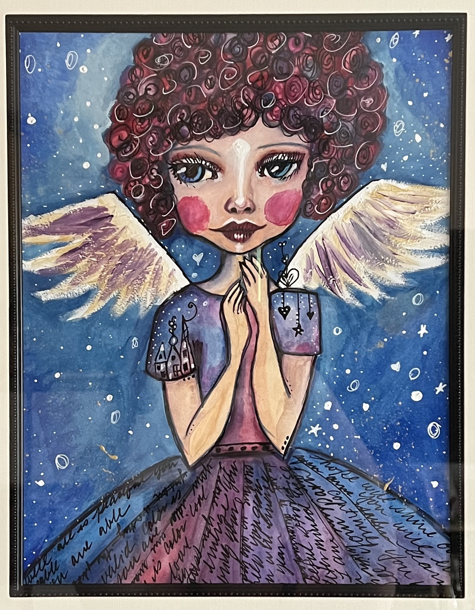

Mixed Media Angel Guardian
 Light of the Art Angel class by Tamara Laporte
This is the first finished mixed media project I ever created. I was
taking a year long course called LifeBook from Tamara Laporte. The Art
Angel was one of the individual classes. It has layers of many mediums
including: paper collage, neocolors, watercolor, acrylic, pencil.
I loved the project when I saw it but wanted an art angel who looked
more like me so I made mine with a wider face and jaw as well as with
curls vs. straight hair. The wings gave me all sorts of hassle so in
the end I just left the latest rendition and told myself to leave them
be. I still am not a fan of them but I LOVE the curls and the messages
written into my piece.